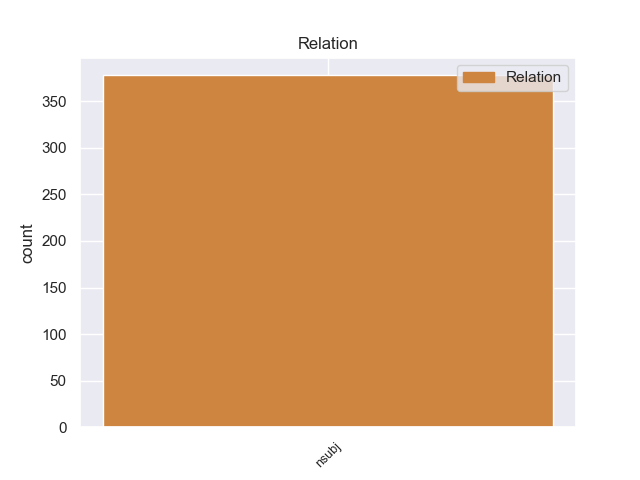
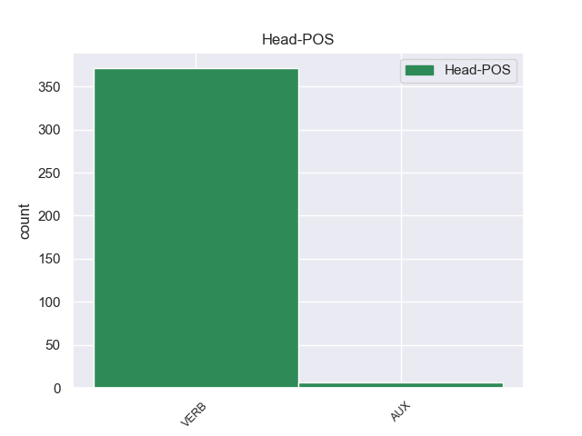
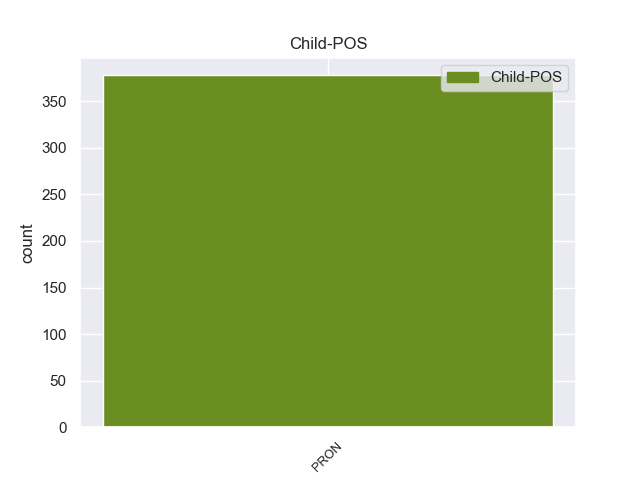

Distribution of features within this leaf



Agreement Rules sorted by frequency.
- When the dependent token is the nominal subject(nsubj) of the head token, and the dependent token is PRON.
1 Υπ' _ _ _ _ 0 _ _ _
2 αυτές _ _ _ _ 0 _ _ _
3 τις _ _ _ _ 0 _ _ _
4 συνθήκες _ _ _ _ 0 _ _ _
5 , _ _ _ _ 0 _ _ _
6 η _ _ _ _ 0 _ _ _
7 Επιτροπή _ _ _ _ 0 _ _ _
8 Νομικών _ _ _ _ 0 _ _ _
9 Θεμάτων _ _ _ _ 0 _ _ _
10 , _ _ _ _ 0 _ _ _
11 της _ _ _ _ 0 _ _ _
12 οποίας _ _ _ _ 0 _ _ _
13 τη _ _ _ _ 0 _ _ _
14 θέση _ _ _ _ 0 _ _ _
15 αποδέχομαι _ _ _ _ 0 _ _ _
16 πλήρως _ _ _ _ 0 _ _ _
17 , _ _ _ _ 0 _ _ _
18 προτείνει _ _ _ _ 0 _ _ _
19 την _ _ _ _ 0 _ _ _
20 απόρριψη _ _ _ _ 0 _ _ _
21 της _ _ _ _ 0 _ _ _
22 αίτησης _ _ _ _ 0 _ _ _
23 άρσης _ _ _ _ 0 _ _ _
24 της _ _ _ _ 0 _ _ _
25 βουλευτικής _ _ _ _ 0 _ _ _
26 ασυλίας _ _ _ _ 0 _ _ _
27 την _ _ _ _ 0 _ _ _
28 οποία οποία PRON _ Case=Acc|Gender=Neut|Number=Sing|Person=3|PronType=Rel 29 nsubj _ _
29 υπέβαλε υπέβαλε VERB _ Aspect=Perf|Mood=Ind|Number=Sing|Person=3|Tense=Past|VerbForm=Fin|Voice=Act 0 _ _ _
30 το _ _ _ _ 0 _ _ _
31 γαλλικό _ _ _ _ 0 _ _ _
32 Υπουργείο _ _ _ _ 0 _ _ _
33 Δικαιοσύνης _ _ _ _ 0 _ _ _
34 , _ _ _ _ 0 _ _ _
35 σ _ _ _ _ 0 _ _ _
36 τη _ _ _ _ 0 _ _ _
37 μορφή _ _ _ _ 0 _ _ _
38 υπό _ _ _ _ 0 _ _ _
39 την _ _ _ _ 0 _ _ _
40 οποία _ _ _ _ 0 _ _ _
41 υποβλήθηκε _ _ _ _ 0 _ _ _
42 σ _ _ _ _ 0 _ _ _
43 το _ _ _ _ 0 _ _ _
44 Κοινοβούλιο _ _ _ _ 0 _ _ _
45 . _ _ _ _ 0 _ _ _
Disagree Examples:
1 Η _ _ _ _ 0 _ _ _
2 Ομάδα _ _ _ _ 0 _ _ _
3 μου μου PRON _ Case=Gen|Gender=Masc|Number=Plur|Person=1|Poss=Yes|PronType=Prs 4 nsubj _ _
4 συμφωνεί συμφωνεί VERB _ Aspect=Perf|Mood=Ind|Number=Sing|Person=3|Tense=Past|VerbForm=Fin|Voice=Act 0 _ _ _
5 ασφαλώς _ _ _ _ 0 _ _ _
6 με _ _ _ _ 0 _ _ _
7 την _ _ _ _ 0 _ _ _
8 άποψη _ _ _ _ 0 _ _ _
9 της _ _ _ _ 0 _ _ _
10 κ. _ _ _ _ 0 _ _ _
11 Cerdeira _ _ _ _ 0 _ _ _
12 Morterero _ _ _ _ 0 _ _ _
13 ότι _ _ _ _ 0 _ _ _
14 θα _ _ _ _ 0 _ _ _
15 πρέπει _ _ _ _ 0 _ _ _
16 να _ _ _ _ 0 _ _ _
17 χρησιμοποιήσουμε _ _ _ _ 0 _ _ _
18 το _ _ _ _ 0 _ _ _
19 υπάρχον _ _ _ _ 0 _ _ _
20 σύστημα _ _ _ _ 0 _ _ _
21 σημείων _ _ _ _ 0 _ _ _
22 επαφής _ _ _ _ 0 _ _ _
23 σ _ _ _ _ 0 _ _ _
24 το _ _ _ _ 0 _ _ _
25 Ευρωπαϊκό _ _ _ _ 0 _ _ _
26 Δικαστικό _ _ _ _ 0 _ _ _
27 Δίκτυο _ _ _ _ 0 _ _ _
28 , _ _ _ _ 0 _ _ _
29 καθώς _ _ _ _ 0 _ _ _
30 είναι _ _ _ _ 0 _ _ _
31 άσκοπο _ _ _ _ 0 _ _ _
32 να _ _ _ _ 0 _ _ _
33 ορίζουμε _ _ _ _ 0 _ _ _
34 συνεχώς _ _ _ _ 0 _ _ _
35 διαφορετικά _ _ _ _ 0 _ _ _
36 συστήματα _ _ _ _ 0 _ _ _
37 σημείων _ _ _ _ 0 _ _ _
38 επαφής _ _ _ _ 0 _ _ _
39 για _ _ _ _ 0 _ _ _
40 ποικίλες _ _ _ _ 0 _ _ _
41 πρωτοβουλίες _ _ _ _ 0 _ _ _
42 . _ _ _ _ 0 _ _ _
1 οι _ _ _ _ 0 _ _ _
2 άνθρωποι _ _ _ _ 0 _ _ _
3 που που PRON _ Case=Nom|Gender=Fem|Number=Plur|Person=3|PronType=Rel 4 nsubj _ _
4 ενδιαφέρονται ενδιαφέρονται VERB _ Aspect=Perf|Mood=Ind|Number=Plur|Person=1|VerbForm=Fin|Voice=Act 0 _ _ _
5 για _ _ _ _ 0 _ _ _
6 τις _ _ _ _ 0 _ _ _
7 ατομικές _ _ _ _ 0 _ _ _
8 ελευθερίες _ _ _ _ 0 _ _ _
9 - _ _ _ _ 0 _ _ _
10 και _ _ _ _ 0 _ _ _
11 εντάσσω _ _ _ _ 0 _ _ _
12 και _ _ _ _ 0 _ _ _
13 τον _ _ _ _ 0 _ _ _
14 εαυτό _ _ _ _ 0 _ _ _
15 μου _ _ _ _ 0 _ _ _
16 σε _ _ _ _ 0 _ _ _
17 αυτούς _ _ _ _ 0 _ _ _
18 - _ _ _ _ 0 _ _ _
19 αναγκάστηκαν _ _ _ _ 0 _ _ _
20 να _ _ _ _ 0 _ _ _
21 συμφωνήσουν _ _ _ _ 0 _ _ _
22 σ _ _ _ _ 0 _ _ _
23 τα _ _ _ _ 0 _ _ _
24 μέτρα _ _ _ _ 0 _ _ _
25 της _ _ _ _ 0 _ _ _
26 αμοιβαίας _ _ _ _ 0 _ _ _
27 αναγνώρισης _ _ _ _ 0 _ _ _
28 , _ _ _ _ 0 _ _ _
29 χωρίς _ _ _ _ 0 _ _ _
30 να _ _ _ _ 0 _ _ _
31 έχουν _ _ _ _ 0 _ _ _
32 σ _ _ _ _ 0 _ _ _
33 τη _ _ _ _ 0 _ _ _
34 διάθεσή _ _ _ _ 0 _ _ _
35 τους _ _ _ _ 0 _ _ _
36 ένα _ _ _ _ 0 _ _ _
37 πλήρες _ _ _ _ 0 _ _ _
38 πρόγραμμα _ _ _ _ 0 _ _ _
39 που _ _ _ _ 0 _ _ _
40 θα _ _ _ _ 0 _ _ _
41 διασφάλιζε _ _ _ _ 0 _ _ _
42 ενδεχομένως _ _ _ _ 0 _ _ _
43 ακόμα _ _ _ _ 0 _ _ _
44 περισσότερο _ _ _ _ 0 _ _ _
45 την _ _ _ _ 0 _ _ _
46 τήρηση _ _ _ _ 0 _ _ _
47 των _ _ _ _ 0 _ _ _
48 ατομικών _ _ _ _ 0 _ _ _
49 δικαιωμάτων _ _ _ _ 0 _ _ _
50 . _ _ _ _ 0 _ _ _
1 Κατά _ _ _ _ 0 _ _ _
2 την _ _ _ _ 0 _ _ _
3 άποψή _ _ _ _ 0 _ _ _
4 μας _ _ _ _ 0 _ _ _
5 , _ _ _ _ 0 _ _ _
6 ο _ _ _ _ 0 _ _ _
7 σκοπός _ _ _ _ 0 _ _ _
8 δεν _ _ _ _ 0 _ _ _
9 είναι _ _ _ _ 0 _ _ _
10 να _ _ _ _ 0 _ _ _
11 υπάρχουν _ _ _ _ 0 _ _ _
12 διαρκώς _ _ _ _ 0 _ _ _
13 όλο _ _ _ _ 0 _ _ _
14 και _ _ _ _ 0 _ _ _
15 περισσότερες _ _ _ _ 0 _ _ _
16 οδηγίες _ _ _ _ 0 _ _ _
17 , _ _ _ _ 0 _ _ _
18 όλο _ _ _ _ 0 _ _ _
19 και _ _ _ _ 0 _ _ _
20 περισσότερες _ _ _ _ 0 _ _ _
21 λεπτομέρειες _ _ _ _ 0 _ _ _
22 , _ _ _ _ 0 _ _ _
23 αλλά _ _ _ _ 0 _ _ _
24 σκοπός _ _ _ _ 0 _ _ _
25 μας μου PRON _ Case=Gen|Gender=Masc|Number=Plur|Person=1|Poss=Yes|PronType=Prs 31 nsubj _ _
26 είναι _ _ _ _ 0 _ _ _
27 οι _ _ _ _ 0 _ _ _
28 χώρες _ _ _ _ 0 _ _ _
29 να _ _ _ _ 0 _ _ _
30 είναι _ _ _ _ 0 _ _ _
31 πρόθυμες πρόθυμες VERB _ Aspect=Imp|Mood=Ind|Number=Plur|Person=3|Tense=Pres|VerbForm=Fin|Voice=Act 0 _ _ _
32 να _ _ _ _ 0 _ _ _
33 δραστηριοποιηθούν _ _ _ _ 0 _ _ _
34 από _ _ _ _ 0 _ _ _
35 κοινού _ _ _ _ 0 _ _ _
36 , _ _ _ _ 0 _ _ _
37 ούτως _ _ _ _ 0 _ _ _
38 ώστε _ _ _ _ 0 _ _ _
39 και _ _ _ _ 0 _ _ _
40 οι _ _ _ _ 0 _ _ _
41 εργοδότες _ _ _ _ 0 _ _ _
42 να _ _ _ _ 0 _ _ _
43 είναι _ _ _ _ 0 _ _ _
44 σε _ _ _ _ 0 _ _ _
45 θέση _ _ _ _ 0 _ _ _
46 να _ _ _ _ 0 _ _ _
47 προσφέρουν _ _ _ _ 0 _ _ _
48 σωστές _ _ _ _ 0 _ _ _
49 τιμές _ _ _ _ 0 _ _ _
50 και _ _ _ _ 0 _ _ _
51 να _ _ _ _ 0 _ _ _
52 μην _ _ _ _ 0 _ _ _
53 υποφέρουν _ _ _ _ 0 _ _ _
54 από _ _ _ _ 0 _ _ _
55 τις _ _ _ _ 0 _ _ _
56 συνέπειες _ _ _ _ 0 _ _ _
57 του _ _ _ _ 0 _ _ _
58 ντάμπιγκ _ _ _ _ 0 _ _ _
59 , _ _ _ _ 0 _ _ _
60 που _ _ _ _ 0 _ _ _
61 αναπτύσσεται _ _ _ _ 0 _ _ _
62 σ _ _ _ _ 0 _ _ _
63 τον _ _ _ _ 0 _ _ _
64 τομέα _ _ _ _ 0 _ _ _
65 αυτό _ _ _ _ 0 _ _ _
66 , _ _ _ _ 0 _ _ _
67 και _ _ _ _ 0 _ _ _
68 φυσικά _ _ _ _ 0 _ _ _
69 και _ _ _ _ 0 _ _ _
70 οι _ _ _ _ 0 _ _ _
71 εργαζόμενοι _ _ _ _ 0 _ _ _
72 να _ _ _ _ 0 _ _ _
73 μπορούν _ _ _ _ 0 _ _ _
74 να _ _ _ _ 0 _ _ _
75 εργασθούν _ _ _ _ 0 _ _ _
76 σε _ _ _ _ 0 _ _ _
77 σωστές _ _ _ _ 0 _ _ _
78 συνθήκες _ _ _ _ 0 _ _ _
79 . _ _ _ _ 0 _ _ _
1 Με _ _ _ _ 0 _ _ _
2 αυτό _ _ _ _ 0 _ _ _
3 μας μας PRON _ Case=Gen|Gender=Masc|Number=Plur|Person=1|Poss=Yes|PronType=Prs 4 nsubj _ _
4 δίνεται δίνετω VERB _ Aspect=Imp|Mood=Ind|Number=Sing|Person=3|Tense=Pres|VerbForm=Fin|Voice=Act 0 _ _ _
5 η _ _ _ _ 0 _ _ _
6 ευκαιρία _ _ _ _ 0 _ _ _
7 να _ _ _ _ 0 _ _ _
8 προβούμε _ _ _ _ 0 _ _ _
9 σε _ _ _ _ 0 _ _ _
10 έναν _ _ _ _ 0 _ _ _
11 ενδιάμεσο _ _ _ _ 0 _ _ _
12 απολογισμό _ _ _ _ 0 _ _ _
13 σε _ _ _ _ 0 _ _ _
14 ό,τι _ _ _ _ 0 _ _ _
15 αφορά _ _ _ _ 0 _ _ _
16 τα _ _ _ _ 0 _ _ _
17 ανθρώπινα _ _ _ _ 0 _ _ _
18 δικαιώματα _ _ _ _ 0 _ _ _
19 σ _ _ _ _ 0 _ _ _
20 την _ _ _ _ 0 _ _ _
21 Τουρκία _ _ _ _ 0 _ _ _
22 και _ _ _ _ 0 _ _ _
23 τη _ _ _ _ 0 _ _ _
24 σημειωθείσα _ _ _ _ 0 _ _ _
25 πρόοδο _ _ _ _ 0 _ _ _
26 σ _ _ _ _ 0 _ _ _
27 τον _ _ _ _ 0 _ _ _
28 τομέα _ _ _ _ 0 _ _ _
29 των _ _ _ _ 0 _ _ _
30 πολιτικών _ _ _ _ 0 _ _ _
31 μεταρρυθμίσεων _ _ _ _ 0 _ _ _
32 . _ _ _ _ 0 _ _ _
1 Για _ _ _ _ 0 _ _ _
2 την _ _ _ _ 0 _ _ _
3 Ομάδα _ _ _ _ 0 _ _ _
4 μου μου PRON _ Case=Gen|Gender=Masc|Number=Plur|Person=1|Poss=Yes|PronType=Prs 5 nsubj _ _
5 υπάρχει υπάρχει VERB _ Aspect=Imp|Mood=Ind|Number=Sing|Person=3|Tense=Pres|VerbForm=Fin|Voice=Act 0 _ _ _
6 , _ _ _ _ 0 _ _ _
7 παράλληλα _ _ _ _ 0 _ _ _
8 με _ _ _ _ 0 _ _ _
9 ορισμένα _ _ _ _ 0 _ _ _
10 άλλα _ _ _ _ 0 _ _ _
11 σημαντικά _ _ _ _ 0 _ _ _
12 θέματα _ _ _ _ 0 _ _ _
13 που _ _ _ _ 0 _ _ _
14 έχουν _ _ _ _ 0 _ _ _
15 ήδη _ _ _ _ 0 _ _ _
16 εν _ _ _ _ 0 _ _ _
17 μέρει _ _ _ _ 0 _ _ _
18 θιγεί _ _ _ _ 0 _ _ _
19 , _ _ _ _ 0 _ _ _
20 ένα _ _ _ _ 0 _ _ _
21 κεντρικό _ _ _ _ 0 _ _ _
22 σημείο _ _ _ _ 0 _ _ _
23 σ _ _ _ _ 0 _ _ _
24 το _ _ _ _ 0 _ _ _
25 οποίο _ _ _ _ 0 _ _ _
26 δεν _ _ _ _ 0 _ _ _
27 μπορούμε _ _ _ _ 0 _ _ _
28 να _ _ _ _ 0 _ _ _
29 συμφωνήσουμε _ _ _ _ 0 _ _ _
30 με _ _ _ _ 0 _ _ _
31 την _ _ _ _ 0 _ _ _
32 Επιτροπή _ _ _ _ 0 _ _ _
33 . _ _ _ _ 0 _ _ _